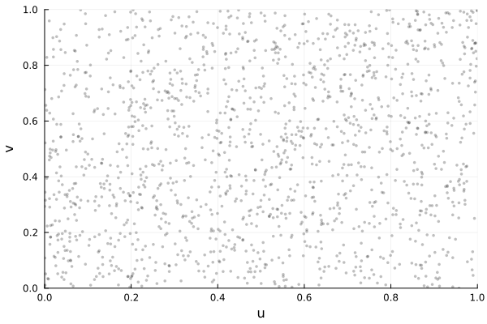

<!DOCTYPE html>
<html lang="en"><head><meta charset="UTF-8"/><meta name="viewport" content="width=device-width, initial-scale=1.0"/><title>Archimax family · Copulas.jl</title><meta name="title" content="Archimax family · Copulas.jl"/><meta property="og:title" content="Archimax family · Copulas.jl"/><meta property="twitter:title" content="Archimax family · Copulas.jl"/><meta name="description" content="Documentation for Copulas.jl."/><meta property="og:description" content="Documentation for Copulas.jl."/><meta property="twitter:description" content="Documentation for Copulas.jl."/><meta property="og:url" content="https://lrnv.github.io/Copulas.jl/archimax/generalities/"/><meta property="twitter:url" content="https://lrnv.github.io/Copulas.jl/archimax/generalities/"/><link rel="canonical" href="https://lrnv.github.io/Copulas.jl/archimax/generalities/"/><script data-outdated-warner src="../../assets/warner.js"></script><link href="https://cdnjs.cloudflare.com/ajax/libs/lato-font/3.0.0/css/lato-font.min.css" rel="stylesheet" type="text/css"/><link href="https://cdnjs.cloudflare.com/ajax/libs/juliamono/0.050/juliamono.min.css" rel="stylesheet" type="text/css"/><link href="https://cdnjs.cloudflare.com/ajax/libs/font-awesome/6.4.2/css/fontawesome.min.css" rel="stylesheet" type="text/css"/><link href="https://cdnjs.cloudflare.com/ajax/libs/font-awesome/6.4.2/css/solid.min.css" rel="stylesheet" type="text/css"/><link href="https://cdnjs.cloudflare.com/ajax/libs/font-awesome/6.4.2/css/brands.min.css" rel="stylesheet" type="text/css"/><link href="https://cdnjs.cloudflare.com/ajax/libs/KaTeX/0.16.8/katex.min.css" rel="stylesheet" type="text/css"/><script>documenterBaseURL="../.."</script><script src="https://cdnjs.cloudflare.com/ajax/libs/require.js/2.3.6/require.min.js" data-main="../../assets/documenter.js"></script><script src="../../search_index.js"></script><script src="../../siteinfo.js"></script><script src="../../../versions.js"></script><link class="docs-theme-link" rel="stylesheet" type="text/css" href="../../assets/themes/catppuccin-mocha.css" data-theme-name="catppuccin-mocha"/><link class="docs-theme-link" rel="stylesheet" type="text/css" href="../../assets/themes/catppuccin-macchiato.css" data-theme-name="catppuccin-macchiato"/><link class="docs-theme-link" rel="stylesheet" type="text/css" href="../../assets/themes/catppuccin-frappe.css" data-theme-name="catppuccin-frappe"/><link class="docs-theme-link" rel="stylesheet" type="text/css" href="../../assets/themes/catppuccin-latte.css" data-theme-name="catppuccin-latte"/><link class="docs-theme-link" rel="stylesheet" type="text/css" href="../../assets/themes/documenter-dark.css" data-theme-name="documenter-dark" data-theme-primary-dark/><link class="docs-theme-link" rel="stylesheet" type="text/css" href="../../assets/themes/documenter-light.css" data-theme-name="documenter-light" data-theme-primary/><script src="../../assets/themeswap.js"></script><link href="../../assets/citations.css" rel="stylesheet" type="text/css"/></head><body><div id="documenter"><nav class="docs-sidebar"><a class="docs-logo" href="../../"></a><div class="docs-package-name"><span class="docs-autofit"><a href="../../">Copulas.jl</a></span></div><button class="docs-search-query input is-rounded is-small is-clickable my-2 mx-auto py-1 px-2" id="documenter-search-query">Search docs (Ctrl + /)</button><ul class="docs-menu"><li><a class="tocitem" href="../../">Home</a></li><li><span class="tocitem">Manual</span><ul><li><a class="tocitem" href="../../getting_started/">Getting Started</a></li><li><a class="tocitem" href="../../sklar/">Sklar&#39;s Distribution</a></li><li><a class="tocitem" href="../../dependence_measures/">Dependence measures</a></li><li><a class="tocitem" href="../../conditioning_and_subsetting/">Conditioning and Subsetting</a></li><li><a class="tocitem" href="../../visualizations/">Visualizations</a></li><li><a class="tocitem" href="../../archimedean/generalities/">Archimedean family</a></li><li><a class="tocitem" href="../../elliptical/generalities/">Elliptical family</a></li><li><a class="tocitem" href="../../extremevalue/generalities/">Extreme Value family</a></li><li class="is-active"><a class="tocitem" href>Archimax family</a><ul class="internal"><li><a class="tocitem" href="#Archimax-in-this-package"><span>Archimax in this package</span></a></li><li class="toplevel"><a class="tocitem" href="#Advanced-Concepts"><span>Advanced Concepts</span></a></li><li><a class="tocitem" href="#Simulation-of-Archimax-Copulas"><span>Simulation of Archimax Copulas</span></a></li></ul></li><li><a class="tocitem" href="../../Vines/">Vines family</a></li><li><a class="tocitem" href="../../empirical/generalities/">Empirical models</a></li><li><a class="tocitem" href="../../troubleshooting/">Troubleshooting</a></li></ul></li><li><span class="tocitem">Bestiary</span><ul><li><a class="tocitem" href="../../elliptical/available_models/">Elliptical Copulas</a></li><li><a class="tocitem" href="../../archimedean/available_models/">Archimedean Generators</a></li><li><a class="tocitem" href="../../extremevalue/available_models/">Extreme Values Tails</a></li><li><a class="tocitem" href="../available_models/">Archimax Models</a></li><li><a class="tocitem" href="../../empirical/available_models/">Empirical Copulas</a></li><li><a class="tocitem" href="../../miscellaneous/">Other Copulas</a></li><li><a class="tocitem" href="../../transformations/">Transformed Copulas</a></li></ul></li><li><span class="tocitem">Examples</span><ul><li><a class="tocitem" href="../../examples/archimedean_radial_estimation/">Nonparametric estimation of the radial law in Archimedean copulas</a></li><li><a class="tocitem" href="../../examples/lambda_viz/">Empirical Kendall function and Archimedean&#39;s λ function.</a></li><li><a class="tocitem" href="../../examples/lossalae/">Loss-Alae fitting example</a></li><li><a class="tocitem" href="../../examples/fitting_sklar/">Fitting compound distributions</a></li><li><a class="tocitem" href="../../examples/ifm1/">Influence of the method of estimation</a></li><li><a class="tocitem" href="../../examples/turing/">Bayesian inference with <code>Turing.jl</code></a></li><li><a class="tocitem" href="../../examples/other_usecases/">Other known use cases</a></li></ul></li><li><a class="tocitem" href="../../dev_roadmap/">Dev Roadmap</a></li><li><a class="tocitem" href="../../idx/">Package Index</a></li><li><a class="tocitem" href="../../references/">References</a></li></ul><div class="docs-version-selector field has-addons"><div class="control"><span class="docs-label button is-static is-size-7">Version</span></div><div class="docs-selector control is-expanded"><div class="select is-fullwidth is-size-7"><select id="documenter-version-selector"></select></div></div></div></nav><div class="docs-main"><header class="docs-navbar"><a class="docs-sidebar-button docs-navbar-link fa-solid fa-bars is-hidden-desktop" id="documenter-sidebar-button" href="#"></a><nav class="breadcrumb"><ul class="is-hidden-mobile"><li><a class="is-disabled">Manual</a></li><li class="is-active"><a href>Archimax family</a></li></ul><ul class="is-hidden-tablet"><li class="is-active"><a href>Archimax family</a></li></ul></nav><div class="docs-right"><a class="docs-navbar-link" href="https://github.com/lrnv/Copulas.jl" title="View the repository on GitHub"><span class="docs-icon fa-brands"></span><span class="docs-label is-hidden-touch">GitHub</span></a><a class="docs-navbar-link" href="https://github.com/lrnv/Copulas.jl/blob/main/docs/src/archimax/generalities.md" title="Edit source on GitHub"><span class="docs-icon fa-solid"></span></a><a class="docs-settings-button docs-navbar-link fa-solid fa-gear" id="documenter-settings-button" href="#" title="Settings"></a><a class="docs-article-toggle-button fa-solid fa-chevron-up" id="documenter-article-toggle-button" href="javascript:;" title="Collapse all docstrings"></a></div></header><article class="content" id="documenter-page"><h1 id="Archimax\\_theory"><a class="docs-heading-anchor" href="#Archimax\\_theory">Archimax Copulas</a><a id="Archimax\\_theory-1"></a><a class="docs-heading-anchor-permalink" href="#Archimax\\_theory" title="Permalink"></a></h1><p><em>Archimax copulas</em> form a hybrid family that combines an Archimedean generator <span>$\phi$</span> with an extreme-value tail defined by its <em>stable tail dependence function</em> <span>$\ell$</span>, or its associated <em>Pickands function</em> <span>$A_{\ell}(t) = \ell(\frac{t}{\lVert t \rVert})$</span>. They interpolate between purely Archimedean and purely EV structures and underpin families such as <strong>BB4</strong> and <strong>BB5</strong>.</p><div class="admonition is-info" id="Bivariate-only-(for-now)-750b6521342a11f2"><header class="admonition-header">Bivariate only (for now)<a class="admonition-anchor" href="#Bivariate-only-(for-now)-750b6521342a11f2" title="Permalink"></a></header><div class="admonition-body"></div></div><p>This section and the current implementation address the <strong>bivariate case</strong>. Multivariate extensions are possible; if you’d like to contribute, we’re happy to provide guidance on how to integrate them.</p><p>An Archimax copula [<a href="../../references/#caperaa2000">44</a>] <span>$C$</span> admits the representation</p><p class="math-container">\[C_{\phi,\ell}(u_1,u_2)=\phi\!\left(\ell\!\big(\phi^{-1}(u_1),\,\phi^{-1}(u_2)\big)\right), \qquad 0\le u_1,u_2\le 1,\]</p><p>where <span>$\phi:[0,\infty)\to(0,1]$</span> is a given Archimedean generator (with inverse <span>$\phi^{-1}$</span>), <span>$A_{\ell}:[0,1]\to[1/2,1]$</span> is a Pickands dependence function, and</p><p class="math-container">\[\ell(x_1,...x_d)= \left(\sum_{i=1}^d x_i\right)\,A_{\ell}\!\left(\frac{x_i}{\left(\sum_{i=1}^d x_i\right)}, i \in 1,...,d\right),\qquad x_1,..,x_d\ge 0.\]</p><p>When <span>$d = 2$</span>, we abuse the <span>$A$</span> notation by setting <span>$A(w) = A(w, 1-w)$</span>.</p><hr/><h2 id="Archimax-in-this-package"><a class="docs-heading-anchor" href="#Archimax-in-this-package">Archimax in this package</a><a id="Archimax-in-this-package-1"></a><a class="docs-heading-anchor-permalink" href="#Archimax-in-this-package" title="Permalink"></a></h2><p>This package provides the abstract type <a href="#Copulas.ArchimaxCopula"><code>ArchimaxCopula</code></a>. Because we expose a wide set of Archimedean generators and extreme-value copulas, <strong>many combinations are possible</strong>: any Archimedean copula can be paired with any extreme-value copula to produce a valid Archimax copula.</p><p>The API is minimal and generic:</p><ul><li>Provide an Archimedean generator <code>gen::Generator</code> with methods <code>ϕ(G, s)</code> and <code>ϕ⁻¹(G, u)</code>. See <a href="../../archimedean/generalities/#Copulas.Generator"><code>Generator</code></a> and <a href="../../archimedean/available_models/#available_archimedean_models">available Archimedean generators</a>.</li><li>Provide an extreme-value tail <code>tail::Tail</code> with its Pickands function <code>A(tail, w)</code> ro stable tail dependence function <code>ℓ(tail, x)</code>. See <a href="../../extremevalue/generalities/#Copulas.ExtremeValueCopula"><code>ExtremeValueCopula</code></a> and <a href="../../extremevalue/available_models/#available_extreme_models">available extreme-value models</a>.</li></ul><p>With these conventions, the constructor <code>ArchimaxCopula(d, gen, tail)</code> produces the correct d-variate model, accross all possiibilities through all implemented (and obviously new user-defined) models.</p><p>You can define an archimax copula as follows: </p><pre><code class="language-julia hljs">using Copulas, Distributions, Plots
C = ArchimaxCopula(2,
    Copulas.FrankGenerator(0.8),                   # Archimedean generator
    Copulas.AsymGalambosTail(0.35, (0.65, 0.3))    # Stable Tail Dependence
)
plot(C)</code></pre><hr/><h1 id="Advanced-Concepts"><a class="docs-heading-anchor" href="#Advanced-Concepts">Advanced Concepts</a><a id="Advanced-Concepts-1"></a><a class="docs-heading-anchor-permalink" href="#Advanced-Concepts" title="Permalink"></a></h1><div class="admonition is-info" id="Tail-behaviour:-42ef446409c5e17f"><header class="admonition-header">Tail behaviour:<a class="admonition-anchor" href="#Tail-behaviour:-42ef446409c5e17f" title="Permalink"></a></header><div class="admonition-body"></div></div><p>The <strong>upper tail</strong> is governed by the extreme value structure, while the <strong>lower tail</strong> is driven by the curvature of the Archimedean generator <span>$\phi$</span>. For specific families (e.g., BB5Copula) there are closed forms for <span>$\lambda_U$</span> and for lower-tail orders.</p><div class="admonition is-category-theorem" id="Theorem-(Exhaustivity-and-consistency):-fcef7a0b0e8be6f2"><header class="admonition-header">Theorem (Exhaustivity and consistency):<a class="admonition-anchor" href="#Theorem-(Exhaustivity-and-consistency):-fcef7a0b0e8be6f2" title="Permalink"></a></header><div class="admonition-body"><p>For bivariate Archimax copulas,</p><p class="math-container">\[\tau_{\phi,A} \;=\; \tau_A \;+\; (1-\tau_A)\,\tau_\phi,\]</p><p>where <span>$\tau_A$</span> is Kendall’s <span>$\tau$</span> of the EV copula with Pickands <span>$A$</span>, and <span>$\tau_\phi$</span> is Kendall’s <span>$\tau$</span> of the Archimedean copula with generator <span>$\phi$</span> (Capéraà, Fougères &amp; Genest, 2000).</p></div></div><hr/><h3 id="Classical-constructions"><a class="docs-heading-anchor" href="#Classical-constructions">Classical constructions</a><a id="Classical-constructions-1"></a><a class="docs-heading-anchor-permalink" href="#Classical-constructions" title="Permalink"></a></h3><ul><li><strong>BB4:</strong> <code>GalambosTail</code> (EV) + <code>ClaytonGenerator</code> (only positive dependence suported yet) <em>gamma LT</em> (LT family <strong>includes</strong> Clayton as a special case).</li><li><strong>BB5:</strong> <code>GalambosTail</code> (EV) + <em>positive stable LT</em> (LT family <strong>includes</strong> Gumbel as a limiting case).</li></ul><p>Each has its own docstring and dedicated section in this documentation.</p><h2 id="Simulation-of-Archimax-Copulas"><a class="docs-heading-anchor" href="#Simulation-of-Archimax-Copulas">Simulation of Archimax Copulas</a><a id="Simulation-of-Archimax-Copulas-1"></a><a class="docs-heading-anchor-permalink" href="#Simulation-of-Archimax-Copulas" title="Permalink"></a></h2><p>The implemented simulation scheme is the “frailty + EV” construction (e.g. [<a href="../../references/#caperaa2000">44</a>] [<a href="../../references/#mai2012simulating">45</a>], which is valid only when the Archimedean generator <span>$\phi$</span> is <strong>completely monotone</strong>, which means it is the Laplace transform of a non-negative random variable <span>$M$</span> called its <em>frailty</em>. If <span>$(V_1,V_2)$</span> follows the EV copula with stable tail dependence function <span>$\ell$</span>, then</p><p class="math-container">\[U_j \;=\; \phi\!\big(-\log V_j\,/\,M\big),\qquad j=1,2,\]</p><p>has the Archimax copula <span>$C_{\phi,A}$</span>.</p><div class="admonition is-category-algorithm" id="Algorithm-(Bivariate-Archimax-sampling):-e4038e5d1afb643e"><header class="admonition-header">Algorithm (Bivariate Archimax sampling):<a class="admonition-anchor" href="#Algorithm-(Bivariate-Archimax-sampling):-e4038e5d1afb643e" title="Permalink"></a></header><div class="admonition-body"></div></div><ul><li>Simulate <span>$(V_1,V_2) \sim C_{\text{EV}}$</span> with stable tail function <span>$\ell$</span> (i.e., Pickands <span>$A$</span>).</li><li>Simulate a frailty <span>$M \ge 0$</span> whose Laplace transform is <span>$\mathbb{E}[e^{-sM}] = \phi(s)$</span>.</li><li>Set <span>$U_j := \phi\!\big(-\log(V_j)/M\big)$</span>, <span>$j=1,2$</span>. Return <span>$(U_1,U_2)$</span>.</li></ul><div class="admonition is-todo" id="Allow-any-generator-ef43099676b3ca11"><header class="admonition-header">Allow any generator<a class="admonition-anchor" href="#Allow-any-generator-ef43099676b3ca11" title="Permalink"></a></header><div class="admonition-body"><p>According to [<a href="../../references/#charpentier2014">46</a>], it should be possible to use any d-monotonous generator. If you want to implement the corresponding sampler, please reach out.</p></div></div><p><strong>Notes on the objects used.</strong></p><ul><li><em>Frailty distribution.</em> By Bernstein’s theorem, a completely monotone <span>$\phi$</span> is a Laplace transform. The helper <code>frailty(G::Generator)</code> returns a distribution for <span>$M$</span> such that <code>E(exp(-s*M)) = ϕ(gen, s)</code> and returns an error if the generator is nt completely monotonous.</li><li><em>EV sampling.</em> Step (1) uses the EV sampler already provided in this package (via <code>ℓ(tail::Tail, x)</code> and <code>A(tail::Tail, x)</code>), as documented in the EV section.</li><li><em>Generality.</em> The recipe extends to <span>$d&gt;2$</span> by simulating <span>$(V_1,\dots,V_d)$</span> (But remember that it is not so simple to obtain it) from the EV copula of variable <span>$d$</span> and applying steps (2)–(3) by components.</li></ul><article class="docstring"><header><a class="docstring-article-toggle-button fa-solid fa-chevron-down" href="javascript:;" title="Collapse docstring"></a><a class="docstring-binding" id="Copulas.ArchimaxCopula" href="#Copulas.ArchimaxCopula"><code>Copulas.ArchimaxCopula</code></a> — <span class="docstring-category">Type</span><span class="is-flex-grow-1 docstring-article-toggle-button" title="Collapse docstring"></span></header><section><div><pre><code class="language-julia hljs">ArchimaxCopula{d, TG, TT}</code></pre><p>Fields</p><ul><li><code>gen::TG</code>  Archimedean generator <span>$\phi$</span> (implements <code>ϕ</code>, <code>ϕ⁻¹</code>, derivatives)</li><li><code>tail::TT</code> Extreme-value tail (implements Pickands <code>A</code> / STDF <code>ℓ</code>)</li></ul><p>Constructor</p><pre><code class="nohighlight hljs">ArchimaxCopula(d, gen::Generator, tail::Tail)</code></pre><p>Definition (bivariate shown). Let <span>$x_i = ϕ^{-1}(u_i)$</span> and denote the STDF by <span>$\ell$</span>. The cdf is</p><p class="math-container">\[C(u_1,u_2) = ϕig( \ell(x_1, x_2) ig).\]</p><p>Reductions</p><ul><li>If <span>$\ell(x) = x_1 + x_2$</span> (i.e., <code>tail = NoTail()</code>), this is the Archimedean copula with generator <code>gen</code>.</li><li>If <span>$ϕ(s) = e^{-s}$</span> (i.e., <code>gen = IndependentGenerator()</code>), this is the extreme-value copula with tail <code>tail</code>.</li></ul><p><code>params(::ArchimaxCopula)</code> concatenates the parameter tuples of <code>gen</code> and <code>tail</code>.</p><p>References:</p><ul><li>[<a href="../../references/#caperaa2000">44</a>] Capéraà, Fougères &amp; Genest (2000), Bivariate Distributions with Given Extreme Value Attractor.</li><li>[<a href="../../references/#charpentier2014">46</a>] Charpentier, Fougères &amp; Genest (2014), Multivariate Archimax Copulas.</li><li>[<a href="../../references/#mai2012simulating">45</a>] Mai, J. F., &amp; Scherer, M. (2012). Simulating copulas: stochastic models, sampling algorithms, and applications.</li></ul></div><a class="docs-sourcelink" target="_blank" href="https://github.com/lrnv/Copulas.jl/blob/b0d817d5455401f62fd917849b91c429daf10fcb/src/ArchimaxCopula.jl#L1-L29">source</a></section></article><div class="citation noncanonical"><dl><dt>[44]</dt><dd><div>P. Capéraà, A.-L. Fougères and C. Genest. <em>Bivariate distributions with given extreme value attractor</em>. Journal of Multivariate Analysis <strong>72</strong>, 30–49 (2000).</div></dd><dt>[45]</dt><dd><div>J.-F. Mai and M. Scherer. <em>Simulating copulas: stochastic models, sampling algorithms, and applications</em>. Vol. 4 (World Scientific, 2012).</div></dd><dt>[46]</dt><dd><div>A. Charpentier, A.-L. Fougères, C. Genest and J. Nešlehová. <em>Multivariate archimax copulas</em>. Journal of Multivariate Analysis <strong>126</strong>, 118–136 (2014).</div></dd></dl></div></article><nav class="docs-footer"><a class="docs-footer-prevpage" href="../../extremevalue/generalities/">« Extreme Value family</a><a class="docs-footer-nextpage" href="../../Vines/">Vines family »</a><div class="flexbox-break"></div><p class="footer-message">Powered by <a href="https://github.com/JuliaDocs/Documenter.jl">Documenter.jl</a> and the <a href="https://julialang.org/">Julia Programming Language</a>.</p></nav></div><div class="modal" id="documenter-settings"><div class="modal-background"></div><div class="modal-card"><header class="modal-card-head"><p class="modal-card-title">Settings</p><button class="delete"></button></header><section class="modal-card-body"><p><label class="label">Theme</label><div class="select"><select id="documenter-themepicker"><option value="auto">Automatic (OS)</option><option value="documenter-light">documenter-light</option><option value="documenter-dark">documenter-dark</option><option value="catppuccin-latte">catppuccin-latte</option><option value="catppuccin-frappe">catppuccin-frappe</option><option value="catppuccin-macchiato">catppuccin-macchiato</option><option value="catppuccin-mocha">catppuccin-mocha</option></select></div></p><hr/><p>This document was generated with <a href="https://github.com/JuliaDocs/Documenter.jl">Documenter.jl</a> version 1.14.1 on <span class="colophon-date" title="Saturday 13 September 2025 14:25">Saturday 13 September 2025</span>. Using Julia version 1.11.6.</p></section><footer class="modal-card-foot"></footer></div></div></div></body></html>
